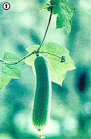
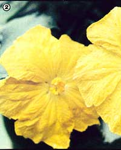
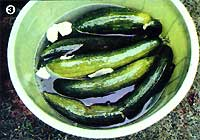
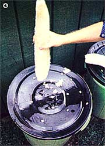

Edible flowers, "squash", bath sponges, and cash: Here's how to grow an unusual plant...
There's a remarkable vine that can provide you with a shady trellis, showy flowers, tasty fruit, and perfect bath sponges ... and can be grown as a cash crop to boot! The plant-which is a native of the Asian tropics-is commonly called luffa, but is also known as Chinese loofah, vegetable sponge, and dishcloth gourd. It resembles a cucumber, but unlike that vegetable, luffa's gourdlike fruit-when dried and peeled-reveals a fibrous, spongy skeleton ... which is so downright useful that the plant is now cultivated throughout world.
The two most popular vegetable sponge species are the ridged luffa ( Luffa acutangula ), favored for its tasty fruit, and the common luffa ( Luffa cylindrica or Lulls aegyptiaca ), usually grown for its one- to two-foot-long gourds. Both varieties are edible, however, and both will produce sponges ... on fast-growing annual vines whose coiled tendrils grab out eagerly for support. The plant's tendency to climb makes it an ideal choice for folks who want to grow a shady arbor or a privacy screen along a fence.
However, even if the luffa didn't produce prolific vines and curious sponges, it might still be planted for its large lemon-yellow flowers (some of which are as much as five inches across), which bloom all summer long. ( Luffa acutangula's blossoms unfurl in the evening, while those of Lulls aegyptiaca open to the rays of the morning sun.)
Many of the flowers fall off without ever forming gourds, because the plant is monoecious ... that is, it has both male and female blossoms on the same vine. The male blooms drop, while the females remain attached to the developing fruit.
Once pollinated, the vegetables fairly rush toward maturity, growing at the rate of an inch and a half a day. If you want to eat your luffa fruit, pick it young, before its fibers toughen up. In general, luffas are harvested for culinary purposes when they're about four inches long, but the smaller the gourd is, the tenderer its flesh will be.
The ridged luffa is the tastier of the two varieties, while the common luffa occasionally develops a bitter flavor. (Although this problem is rare, use caution when eating any bitter gourds... because distasteful fruit can be toxic.) Barring any unlikely bitterness, though, luffa makes a delicious table vegetable. When the gourds are gherkin-sized, they can be added, raw, to salads or cut up in soup like okra. But the real gastronomic utility of this vegetable lies in its ability to substitute for squash or zucchini... or for eggplant in parmigiana. And one especially hearty recipe-adapted from a traditional dish using green peppers-is for stuffed luffa.
To make the dinnertime treat, cut 2 sixinch gourds lengthwise, scoop out their middles, and parboil or steam the shells for 3-4 minutes. Meanwhile, chop and lightly sauté 1 clove of garlic, 1 onion, and 1/4 pound of mushrooms. Add 2 cups of cooked rice, 1/4 cup of pecans, and some crumbled cooked bacon (optional) to the mixture. Then, season the filling with thyme and tarragon, stuff it into the luffa cavities, sprinkle Parmesan cheese and wheat germ over the top, and bake the "boats" for 25 to 30 minutes at 350°F. Mmmmm!
In Japan (which is the world's biggest supplier of luffa) the fruit is sliced and dried in the sun like apples. In India the gourds are popular in curries, while Malayans relish the young leaves raw, and the Annamese people of China like to eat the male flowers and flower buds. (The blooms can be dipped in batter and sautéed as you would nasturtium or day lily blossoms.)
If it's sponges you're after, though, don't pick the luffa gourds until they've reached the length you want (a maximum of two feet). Once they attain "full size", you'll have two processing alternatives. The lazy method is to leave the fruit to dry, either on the vine or off. When it has turned to a tan or brown and is light in weight, you can easily chip away the brittle outer skin with your fingernails ... or, better still, soak the dried fruit in water for a few days, and its covering will burst open and peel off with even less effort. (Be sure to shake out the seeds and save them for the next season, because once you've felt the stimulating massage of a luffa sponge, you'll never want to be without one.)
However, should your area's growing season turn out to be too short to enable the sponges to dry on the vine, and if you don't have room to let them "age" in your house, you can simmer green luffas until they're tender (or pressure-cook them for 10 minutes at 10 pounds' pressure). When the gourds have cooled, simply unzip the peelings by pulling the "strings" in the skins' ridges ... then swish the sponges around in a bucket of water to remove the seeds.
Some people immerse their dried and skinned scrubbers in a solution of one tablespoon of bleach per quart of water, because they want their dishcloth gourds to be snowy white. We like the natural golden color, however, and suspect that the bleaching may shorten the useful life of the sponge.
The luffa vine will grow under a variety of conditions, since it doesn't require much other than sun and good, humus. rich soil. If you have trouble finding luffa seeds, they can be ordered from Nichols Garden Nursery (Dept. TMEN, 1190 North Pacific Highway, Albany, Oregon 97321), J.L. Hudson, Seedsman (Dept. TMEN, P.O. Box 1058, Redwood City, California 94064 ... send $1.00 for catalog), and Gurney Seed and Nursery Co. (Dept. TMEN, Yankton, South Dakota 57079).
Like its cousin the cucumber, luffa is sensitive to cold and won't tolerate even a light frost. In addition, because of its tropical origin, the vine requires a long growing season. Folks who live south of the Mason-Dixon line will probably be able to simply plant the seeds outdoors in hills after the ground warms thoroughly, but northerners would be well advised to start their plants indoors ... in February or March.
To do so, first soak the seeds overnight for faster germination, then plant two or three per peat pot. Thin out all but the strongest seedling in each container before the small vines become large enough to strangle each other, and set them out after you're sure of warm weather ... but don't gamble, as a cold snap will hinder their growth.
Plant your future back-scrubbers in groups four feet apart, because it's somewhat doubtful that a single plant will be able to fertilize itself. (Some gardeners hand-pollinate the flowers by transferring pollen from the male bloom to the female stigma with a small brush. If your vines are grown indoors and out of the reach of bees and other insects, you'll certainly need to do so, too.)
Rather than let the vine sprawl aimlessly, grow the gourds on upright supports-or place flat rocks under the developing gourds to keep them off the ground-and your yield will be greater.
Like many plants, the luffa likes to be pinched back, so cut off the tips of the vines when the tendrils reach ten feet in length. This action should encourage the development of the side branches upon which the gourds will develop. The side shoots themselves can then be pinched back to promote even greater bushiness and higher yields. (It's also a good idea to pick off the first flowers, and any new gourds that are deformed or unhealthy.)
As a general rule, you can expect to harvest up to 25 gourds from each plant, and it's been estimated that-under ideal conditions-a grower might be able to produce up to 24,000 luffa par acre. With the sponges (or, often, merely sections of them) selling for $2.00 to $8.00 apiece, the plant has strong potential as a cash crop... if you can locate the proper markets. (Health food, department, and drug stores are all possible wholesale customers. Even large variety store chains are potential outlets.)
There's an incredible range of uses for luffa sponges. Besides being handy bath accessories, they're great as pot scrubbers ... particularly for no-stick pans. During World War II, the durable fiber was used in surgical operations ... as filter material in the Navy's steam and diesel engines ... and-because of its insulating properties-in Army helmet linings. Luffa gourds have also been processed into potholders, doormats, gloves, sandals, and stuffing for mattresses and saddles.
The plant has served-for hundreds of years-as a healing herb as well. Luffa seeds are emetic and purgative, and the leaves are used by the Chinese in a treatment for skin diseases. In Japan, a preparation made from luffa is sold commercially as a skin softener. And, according to a sixteenth-century Chinese herbalist, "The fresh fruit is considered to be cooling and beneficial to the intestines."
In short, it would be very difficult to name any other single plant that can be put to more uses than the lovely luffa vine lends itself to ... both within the body and without!
|
 PHOTOS BY THE AUTHOR'S AND MOTHER'S STAFF A luffa gourd can grow 1-1/2 inches a day! |
 PHOTOS BY THE AUTHOR'S AND MOTHER'S STAFF The vine's lovely blossoms will brighten up any garden |
 When soaked in water, the skins will burst open |
|
 Then you can just pop out the sponge, shake out the seeds. |
Enjoy a super scrub! |
|